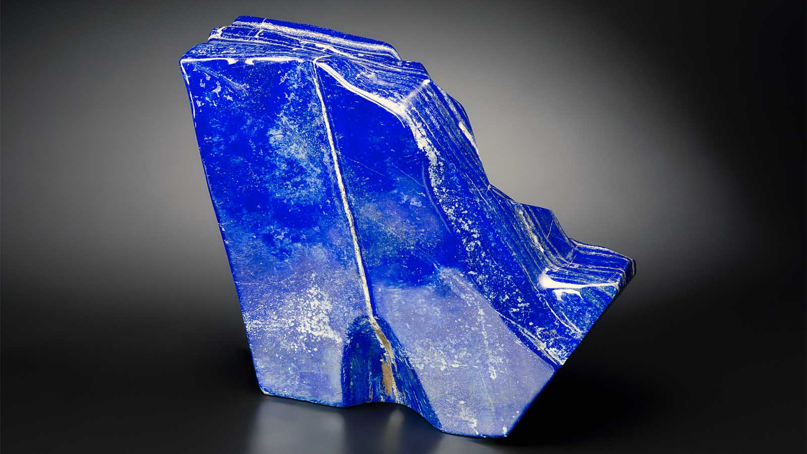
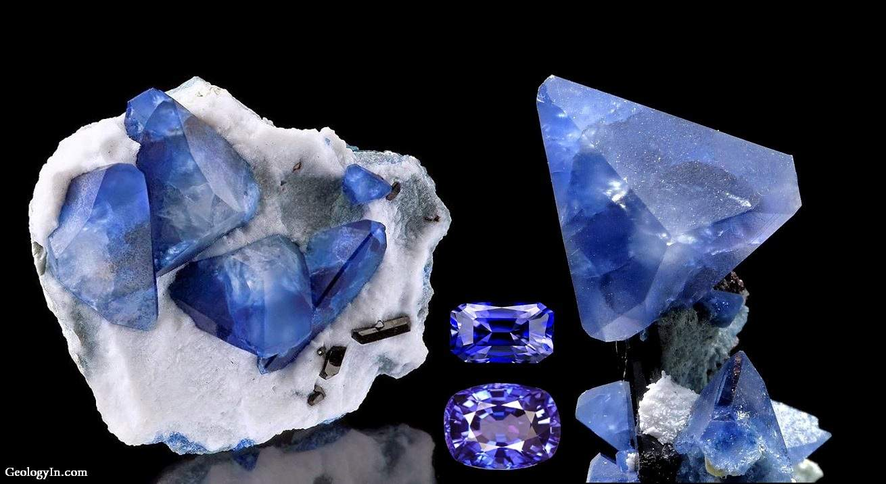

Compared to other hues, blue is less frequent in minerals and crystals.
- Due to the rarity of minerals and crystals possessing the necessary chemical and structural makeup to generate blue, blue is less prevalent in minerals and crystals than other hues.
- The color that minerals and crystals show is frequently influenced by the particular chemical makeup and the arrangement of the atoms in the crystal structure. Minerals and crystals are made up of a variety of elements and compounds. Different kinds of electron transitions and light wave absorption result in various hues. A certain set of circumstances, such as a particular kind of crystal structure and the presence of particular elements or impurities, are required to generate the color blue.
- Simply put, minerals and crystals are like puzzle pieces: in order to create a specific hue, in this case blue, the right shape and quantity of pieces are required. Because they do not require the same circumstances as blue, other hues like red, yellow, and green are more widespread and simpler to create.
- To be more specific, blue structural coloration in minerals and crystals requires the presence of particular elements, a precise arrangement of atoms, and a specified size and form of the crystal. For instance, the mineral lazurite is well known for its intense blue hue, which is brought on by the presence of sulfur and titanium atoms organized in a certain pattern. Similar to how blue sapphires get their color from titanium and iron atoms in a particular crystal structure, Blue minerals and crystals are more abundant because of the specific circumstances needed for these structural colorations to emerge. rare.

